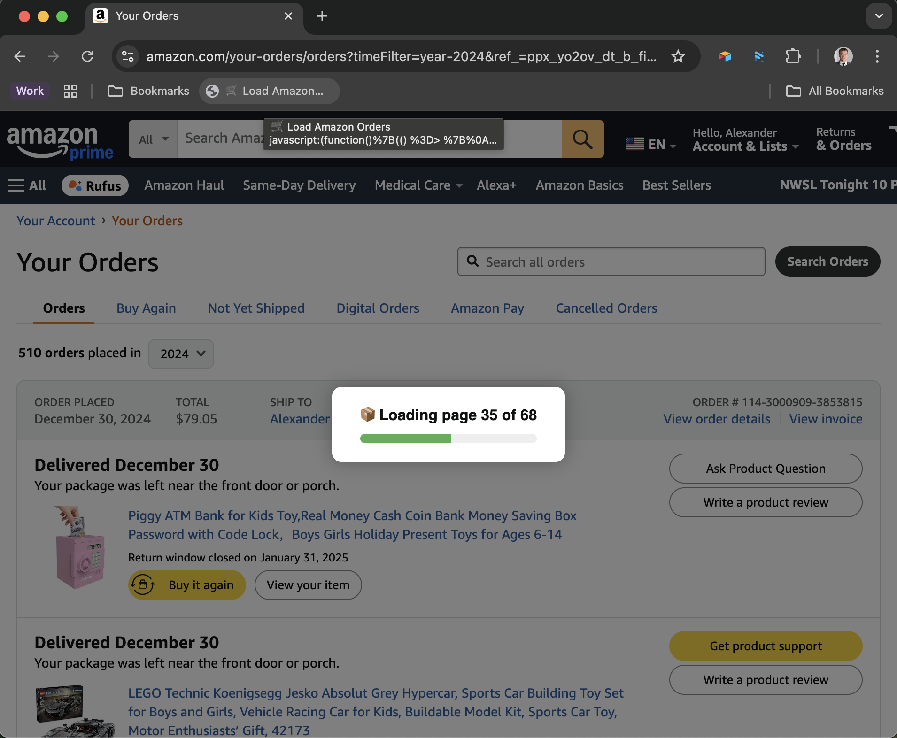

🛒 Amazon Order Loader Bookmarklet
📱 Works directly in your browser!
Visit the Installation Page for the easy drag & drop setup.
This bookmarklet automatically loads all your Amazon order history pages into a single view, no
matter where you start: the default order page, a specific year, or a filtered view (like "last 30 days").
It:
- ✅ Works on any Amazon Orders URL (
/your-orders/orders?...)
- 📄 Appends all order cards from all pages onto the same page
- 📊 Shows a smooth, semi-transparent progress modal
- 🚀 Fades out cleanly when all pages are loaded
- 🛑 Detects when you're on the last page and exits with no unnecessary requests
✨ Features
- 🔍 Automatically discovers how many pages exist (even if hidden under
... in pagination)
- 🧠 Starts only from the current page and fetches forward
- 💡 Adaptive to any date filters or pagination
- 💬 Clean console logs for debugging
- 🎨 Beautiful modal UI in the center of the screen
- ⏳ Animated progress bar and dimmed background
- 🧼 Overlay fades away after loading completes
📥 Installation
The easiest way to install is via our dedicated Installation Page.
▶️ Usage
- Go to your Amazon Orders page (any of these will work):
https://www.amazon.com/your-orders/ordershttps://www.amazon.com/your-orders/orders?timeFilter=year-2024https://www.amazon.com/your-orders/orders?startIndex=10https://www.amazon.com/your-orders/orders?timeFilter=last30
- Click your bookmarklet (the bookmark you created).
- Watch the progress bar and let it load all your orders from all pages.
- Once finished, the UI will disappear smoothly — and your page will show everything in one view.
📷 Screenshot
📦 Bookmarklet in Action

The bookmarklet shows a clear progress indicator while
loading.
🛠 Development
To tweak the behavior (e.g., add export to CSV, auto-scroll, or more styling):
📄 License
MIT — free to use and modify for personal or commercial use.
🙋♀️ Support
If you find a bug or want to suggest an enhancement, feel free to open an issue or PR.
Enjoy your full-order history with one click! 🎉